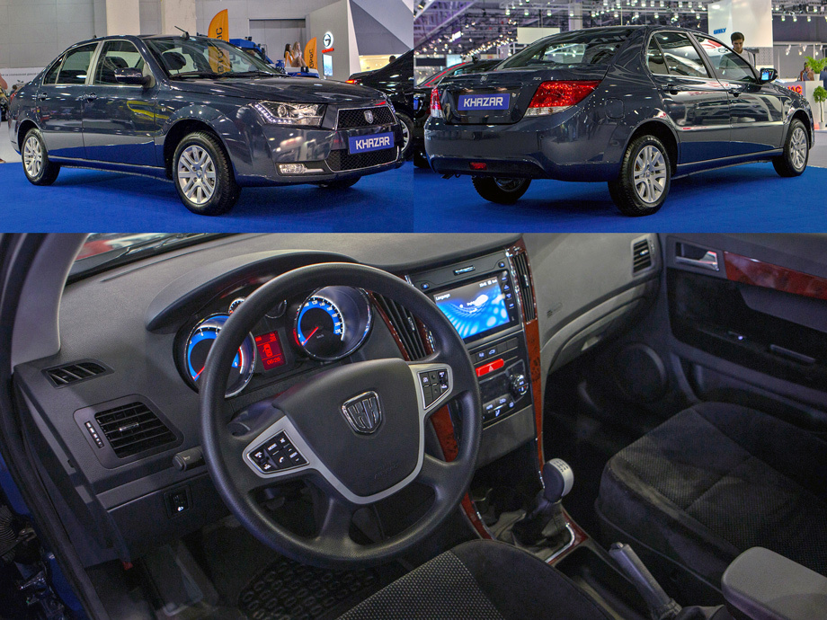
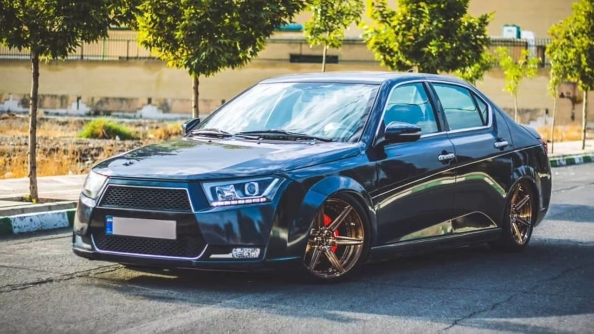

Khazar: новая марка автомобилей из Азербайджана
На постсоветском пространстве родилась новая марка легковых автомобилей: 29 марта президенты Исламской Республики Иран и Азербайджанской Республики дали символический старт производству автомобилей «Хазар» в Нефтчальском районе Азербайджана. Автомобильный завод «АзКрон» принадлежит совместному предприятию «Аеврокар», которое, в свою очередь, на 75% принадлежит группе «Азермаш». Оставшаяся четверть приходится на известную россиянам крупнейшую иранскую автомобильную компанию Iran Khodro. «Правде», по информации иранской стороны, свою долю они внесли не деньгами, а техническими и инженерными составляющими. В планах компании сборка автомобилей Iran Khodro Dena, Dena+, Runna, Soren и Samand, а также производимых в Иране по лицензии моделей Peugeot 206 и 207, Renault Tondar (Logan первого поколения) и автомобилей Pickup на его базе. По информации «АзерМаш», единовременно завод может выпускать только одну модель — сейчас это седаны Iran Khodro Dena+ с двигателем 1,7 и механической коробкой передач в двух комплектациях S5 (Simple) и L5 (Luxury). Машины с «автоматом» займут место на конвейере только после сборки первой партии.На производстве занято 300 сотрудников, план на этот год — сборка шести тысяч автомобилей, а к концу 2019 года объем должен вырасти до десяти тысяч машин в год. Основным потребителем станет местный рынок — первый заказ уже получен от Министерства экономики Азербайджана. Но примерно пятая часть машин должна пойти на экспорт: в числе приоритетных рынков значатся Туркменистан, Таджикистан, Украина и, конечно же, Россия. Любопытно, что буквально накануне начала сборки автомобилей Khazar стало известно о новых планах сборки моделей Iran Khodro Dena и Dena+ на белорусском заводе Юнисон. Разумеется, также с прицелом на российский рынок. Иранские автомобили возьмут нас «в клещи»? Азербайджанцы обещают привлекательные цены: Хазары с «механикой» оцениваются в республике в 14—17 тысяч манатов (476—578 тысяч рублей по текущему курсу). Цена двухпедальных автомобилей по плану не должна превысить 714 тысяч рублей. Впрочем, в России машины, импортируемые из не входящей в ЕврАзЭС страны, наверняка окажутся заметно дороже. Интересно, что это не первый совместный проект азербайджанских и иранских автопроизводителей. С 2005 по 2010 год модель Iran Khodro Samand выпускали в Шемахе под названием AzSamand (альтернативно — Aziz). Однако производство остановилось после выпуска около полутора тысяч машин.
 